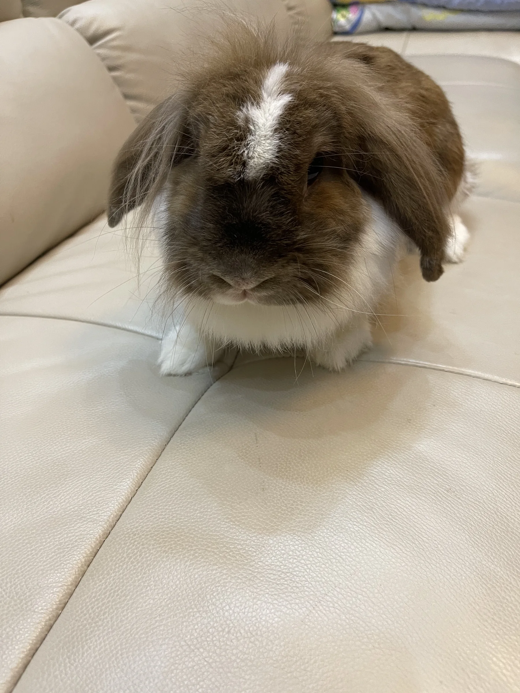
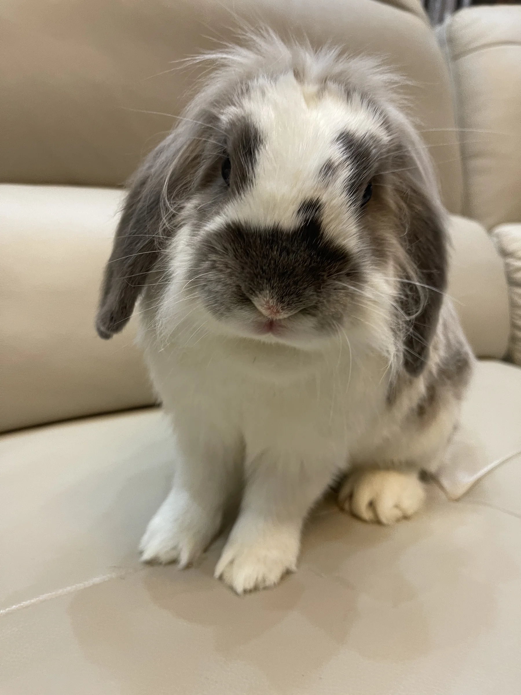
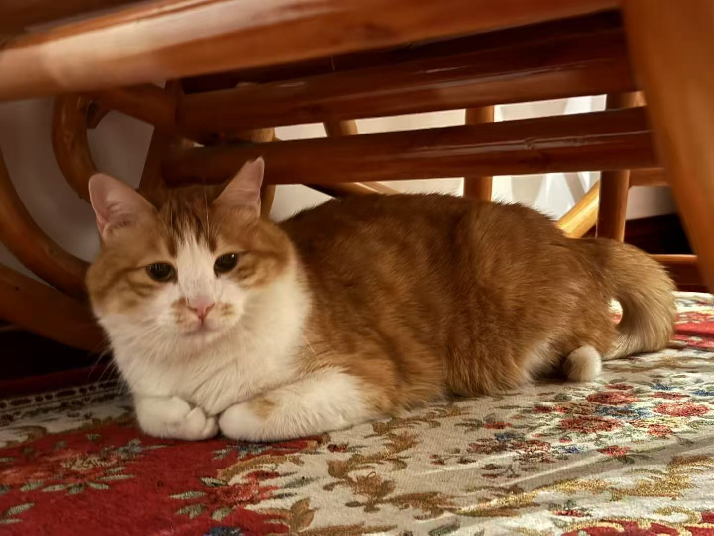

Chunliang 纯良
Rabbit · Gentle and curious
Four companions · 四个小伙伴
Two rabbits and two rescue cats, each with a name, a story, and a different way of becoming part of our family.
The household · 家里的小动物




Rabbit · Gentle and curious
Rabbit · Calm and resilient
Rescue cat · Found a home
Rescue cat · Found a home
I have two beloved rabbits and two cats, each with their own story. My rabbit Chunliang was gentle, curious, and deeply loved by our whole family. Sadly, she passed away from cancer on April 20, 2025. Her presence brought warmth and laughter into our home, and her memory remains with us every day.
Gangbeng, our other rabbit, is now almost eight years old. He is calm, resilient, and has been with us through many seasons of life. We also have two rescue cats—Tiezhu and Zhaocai. Both were once strays, but thanks to my mom’s compassion, they found a safe home with us. Each pet has a name, a story, and a place in our hearts.
我家有两只兔子和两只猫，每一只都有属于自己的故事。兔子“纯良”性格温和、好奇，是我们全家的开心果。不幸的是，她因癌症于2025年4月20日离世，但她带来的欢乐与陪伴永远留在我们的记忆中。
另一只兔子叫“钢镚”，如今已经快八岁了。他一直很坚强，也见证了我们家的许多时光。此外，我们还有两只猫，是妈妈在外收养的流浪猫，一只是“铁柱”，一只是“招财”。从流浪到拥有归属，它们如今是我们家庭中不可或缺的一部分。每一个名字背后都有一个故事，也藏着我们对它们的爱。